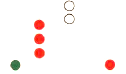
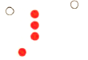
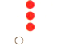
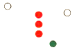
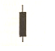
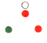
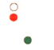
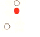
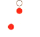
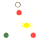

СВЕТЛИНИ И ЗНАЦИ (ФИГУРИ) - ИЗИСКВАНИЯ ЗА КОРАБ ОГРАНИЧЕН ОТ СВОЕТО ГАЗЕНЕ, ПИЛОТСКИ КОРАБ, КОРАБИ НА КОТВА И ЗАСЕДНАЛИ КОРАБИ
|
| 151. Кой кораб носи тези светлини?:  |
|
Кораб, ограничен от своето газене, по-дълъг от 50м., идва срещу нас Кораб, зает с водолазна дейност, по-дълъг от 50м. , идва срещу нас Кораб, зает с водолазна дейност, по-къс от 50м. , идва срещу нас Кораб без управление, идва срещу нас |
| документ регламентиращ правилния отговор: GOLREG (rule28) |
| 152. Кой кораб носи тези светлини?:  |
|
Кораб, ограничен от своето газене, по-дълъг от 50м., идва срещу нас Кораб, ограничен в способността си да маневрира, на котва Кораб, ограничен от своето газене, по-дълъг от 50м., движи се на ляво Кораб без управление, движи се на ляво |
| документ регламентиращ правилния отговор: GOLREG (rule28) |
| 153. Кой кораб носи тeзи светлини?:  |
|
Кораб, ограничен в способността си да маневрира, на котва Кораб, ограничен от своето газене, виждаме кърмата Кораб без управление, на котва Кораб без управление, вижда се кърмата |
| документ регламентиращ правилния отговор: GOLREG (rule28) |
| 154. Кой кораб носи тeзи светлини?  |
|
Кораб, ограничен от своето газене, по-дълъг от 50м., движи се на ляво Кораб без управление, движи се на дясно Кораб, ограничен от своето газене, по-къс от 50м., движи се на дясно Кораб, ограничен от своето газене, по-дълъг от 50м., движи се на дясно |
| документ регламентиращ правилния отговор: GOLREG (rule28) |
| 155. Кой кораб носи този знак през деня?:  |
|
Кораб, ограничен в способността си да маневрира Кораб без управление Риболовен кораб Кораб, ограничен от своето газене |
| документ регламентиращ правилния отговор: GOLREG (rule28) |
| 156. Кой кораб носи тези светлини?:  |
|
Пилотски кораб на ход, движи се срещу нас Ветроходен кораб, движи се срещу нас Кораб без управление, движи се срещу нас Риболовен кораб, движи се срещу нас |
| документ регламентиращ правилния отговор: GOLREG (rule29) |
| 157. Кой кораб носи тези светлини?:  |
|
Ветроходен кораб, движи се на дясно Пилотски кораб на ход, движи се на дясно Пилотски кораб на ход, движи се на ляво Риболовен кораб, движи се на дясно |
| документ регламентиращ правилния отговор: GOLREG (rule29) |
| 158. Кой кораб носи тези светлини?:  |
|
Ветроходен кораб, вижда се кърмата Пилотски кораб на ход, вижда се кърмата Заседнал кораб Риболовен кораб,вижда се кърмата |
| документ регламентиращ правилния отговор: GOLREG (rule29) |
| 159. Кой кораб носи тези светлини?:  |
|
Ветроходен кораб, на ход Риболовен кораб, движи се на ляво Пилотски кораб на ход, движи се на ляво Заседнал кораб |
| документ регламентиращ правилния отговор: GOLREG (rule29) |
| 160. Кой кораб носи тези светлини?:  |
|
Ветроходен кораб, няма ход относно водата Кораб без управление, движи се на заден ход Риболовен кораб, мрежите са пуснати, от л/б Пилотски кораб на въздушна възглавница |
| документ регламентиращ правилния отговор: GOLREG (rule29) |